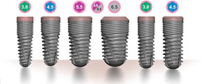

The ITI TE® Implants have the shape and advantages of cylindrical implant and conical shape, with added efficacy of tapered part in the upper root area. The Tapered Effect Implants are indicated particularly for immediate implantation (on the same day of extraction) and early implantation (after 6-8 weeks), for lasting treatment success in demanding cases. The ITI Te technology is on hand at hospitals in Mumbai and some in other parts of India.
Replace Select Straight implants
Replace Select Straight implants ensure immediate loading, recognizing sufficient bone stability and appropriate occlusal loading. This offers the choice of prosthetic procedure which is best for the patient.
Replace Select Tapered implants
The design represents a landmark in implant treatment for immediate loading. When applicable, your patients will walk out the office with new teeth plus immediate function.
Brånemark System implants
The Immediate Loading protocol for the installation of Brånemark System implants is recommended for use only in the anterior mandible. In this region, good initial stability of the fixtures, with or without bicortical anchorage, can generally be obtained. Good initial stability of the fixtures is an ultimate prerequisite to apply in the Immediate Loading treatment concept.
Using the one-piece design, most often, the surgery can be made flapless, with minimal surgical invasion. In most situations the implant can be inserted and used immediately, based on the refined treatment protocol and the unique implant surface, TiUnite.